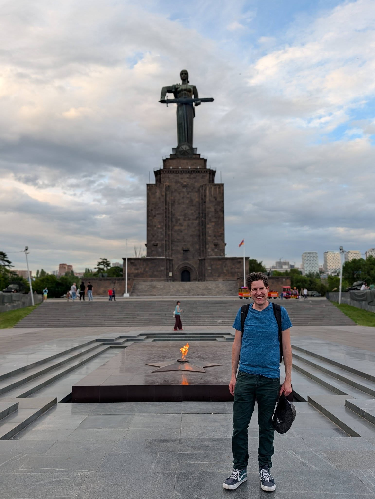
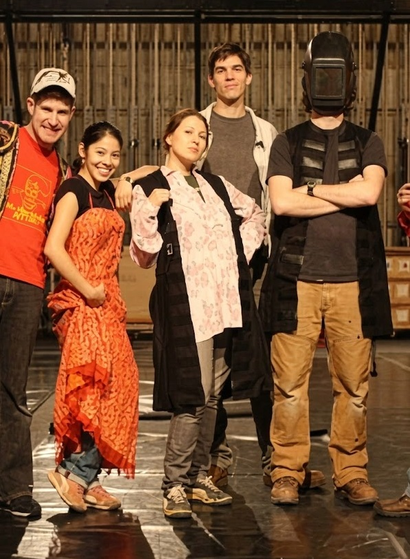
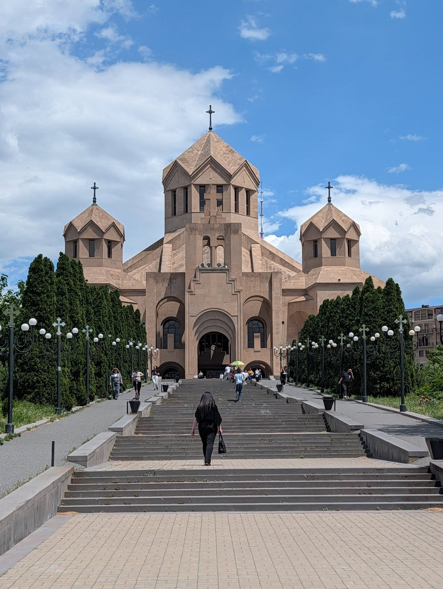

120 Decibels of Healing
A reflection on community, noise, and showing up when a neighborhood is rocked by tragedy. This piece explores my sixteen-year journey with an imperfect instrument and what it means to bring your unique gifts to the people around you when it matters most.
A Vigil in Tangletown
When our neighborhood in Minneapolis was deeply shaken, I couldn’t stay silent. Shaking, sweating, and clutching my bagpipes, I walked down to a park vigil and played Amazing Grace. It reminded me exactly why I play in a band that cherishes the post-practice chats far more than the practice itself.

Macalester Recalls: The Theater Crew
Collaborations on the stage and behind the scenes. This archive serves as a repository for the creative intersections, puppet projects, and lasting connections built during my time at Macalester College.
Backstage Peers & Creative Connections
Looking back at the long rehearsals, late-night production adjustments, and shared creative energy that defined our theater circle. These moments of collective design remain a cornerstone of my time on campus.

Yerevan Travels
Reflections on the architecture and atmosphere of the city during my travels through the Caucasus.
The Cathedral
Taking in the stunning design and historical presence of the cathedral.
